Study notes: Module I: crystal structure and X-ray diffraction
1.1–1.4 Crystal lattice, translation vectors, unit cell and basis (student notes)
Before you start
- A solid is crystalline when its atoms repeat in a regular pattern; amorphous when only short-range order exists (book §1.1).
- A vector can be written as a sum of multiples of other vectors: $\mathbf r' = \mathbf r + \mathbf T$.
- Area of a parallelogram spanned by $\mathbf a$ and $\mathbf b$ is $|\mathbf a\times\mathbf b|$; a volume of a parallelepiped is a triple product.
Recall. From Class 12: two vectors $\mathbf a$ and $\mathbf b$ have a cross product $\mathbf a\times\mathbf b$ whose magnitude is $ab\sin\theta$, the area of the parallelogram they make.
Re-derive.
- Take the parallelogram with sides $\mathbf a$ (length $a$) and $\mathbf b$ (length $b$) at angle $\theta$.
- Its base is $a$, and its height is $b\sin\theta$.
- So the area is $a\,b\sin\theta = |\mathbf a\times\mathbf b|$.
- Now add a third vector $\mathbf c$ that does not lie in the plane of $\mathbf a$ and $\mathbf b$. The volume of the parallelepiped is (base area) times (height), and the height is the component of $\mathbf c$ along the normal $\hat{\mathbf n}$ of the base.
Saved. The volume of the cell is $V=|\mathbf a\cdot(\mathbf b\times\mathbf c)|$ (book §1.3; not numbered in the excerpt).
1. A lattice is an array of points that looks the same from every point
Picture a sheet of graph paper with a dot at every crossing. If you stand on any dot and look around, you see the same pattern as from any other dot. A set of points with this property is a point lattice or space lattice. The points are imaginary: they do not have to be atoms. They only give the framework on which the atoms are placed.
The pattern repeats by a translation. Any lattice point $\mathbf r$ can be moved by a vector $\mathbf T$ to another lattice point $\mathbf r'$:
Here $n_1$, $n_2$ and $n_3$ are whole numbers, positive, negative or zero. The vectors $\mathbf a$, $\mathbf b$ and $\mathbf c$ are the fundamental translation vectors. Applying Eq. (1.1) to any starting point gives
In a perfect lattice, every choice of whole numbers gives a lattice point. In an imperfect lattice this fails: no choice of $\mathbf a$, $\mathbf b$, $\mathbf c$ makes every $\mathbf r'$ identical to $\mathbf r$.
2. Primitive and non-primitive translation vectors
The same lattice can be described by different pairs of vectors. Figure 1.1 shows two. For the first pair, $\mathbf a_1$ and $\mathbf b_1$, the point $\mathbf R'$ is reached from $\mathbf R$ by $\mathbf T = 0\,\mathbf a_1 + 1\,\mathbf b_1$. The coefficients are whole numbers. Such vectors are primitive.
For the second pair, $\mathbf a_2$ and $\mathbf b_2$, the same point is reached by $\mathbf R' = \mathbf R + \tfrac12\mathbf a_2 + \tfrac12\mathbf b_2$. The coefficients are halves. Such vectors are non-primitive. Both work, but a non-primitive set does not match the periodicity of the lattice step by step, so the book prefers a set of orthogonal and shortest possible vectors.
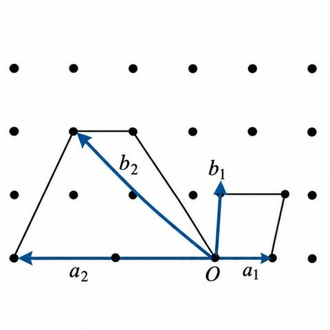
3. The unit cell
The parallelogram (in two dimensions) or parallelepiped (in three) formed by the translation vectors is a unit cell. Copying the cell by all translations rebuilds the whole lattice. So the cell is the smallest building block.
There are two kinds of cell. A primitive cell is the smallest possible; its lattice points all sit at its corners, so it contains one lattice point in effect. A non-primitive cell is larger; it has lattice points at the corners and also inside or on faces. Figure 1.2 shows a primitive cell ABCD and two non-primitive cells EFGH and KLMN.
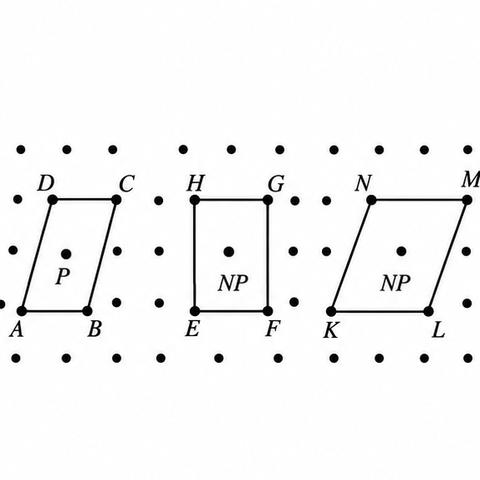
The volume of a primitive cell with edges $\mathbf a$, $\mathbf b$, $\mathbf c$ is $V=|\mathbf a\cdot(\mathbf b\times\mathbf c)|$, which is the box of the recall above.
4. The Wigner–Seitz cell
A primitive cell can also be built without choosing vectors first. Join a lattice point to all its neighbours. Draw the perpendicular bisector (the normal at the midpoint) of each line. The smallest region enclosed by these bisectors is the Wigner–Seitz cell. It is primitive and it has the full symmetry of the lattice. Figure 1.3 shows the construction.
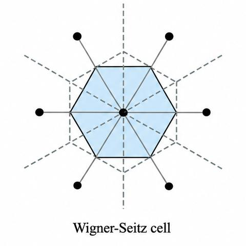
Two rules follow. Any primitive cell has the same volume. The choice of unit cell is a matter of convenience: the cell with the smallest volume is the natural choice, but a non-primitive cell is often picked as the conventional cell when it shows the symmetry more clearly (for example a face-centred cubic cell rather than its primitive rhombohedron).
5. The basis turns a lattice into a crystal
A lattice is a mathematical set of points. A crystal is a physical object. To get a crystal, put the same group of atoms, the basis, at every lattice point, in the same orientation:
Space lattice + Basis → Crystal structure
Figure 1.4 gives the example. Two atoms (one hollow, one filled) form the basis. Placing the basis at each lattice point makes the crystal.
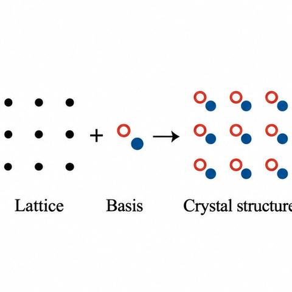
The basis can be one atom (copper is a monatomic fcc crystal), two atoms (NaCl, Section 1.13), or thousands of atoms (some biological materials). Only fourteen lattices exist, so the large variety of crystals comes from the many possible bases.
Every crystal structure is generated by one of the fourteen Bravais lattices with a definite basis. Lattice points are a mathematical idea; atoms are physical (book §1.4).
Worked check: counting lattice points in a cell
Take the non-primitive rectangle in Figure 1.2 with lattice points at its four corners and one at its centre. The corners each lie on four cells in a periodic arrangement, so each corner counts $1/4$ for this rectangle. The centre point belongs to this cell only, so it counts 1. The total is $4\times\tfrac14+1=2$. For the three-dimensional cases (Section 1.7, Eq. 1.5) the same reasoning gives 1, 2 and 4 points for sc, bcc and fcc.
Summary of this section
- A lattice is a set of points with identical surroundings, built from translations (Eqs. 1.1 and 1.2).
- Translation vectors with whole-number coefficients are primitive; others are non-primitive.
- A unit cell is the building block; a primitive cell has the smallest volume and one lattice point in effect.
- The Wigner–Seitz cell is a primitive cell built from perpendicular bisectors.
- A crystal is a lattice plus a basis.
1.5–1.6 Symmetry operations, point groups and space groups (student notes)
Before you start
- A symmetry operation leaves the crystal looking the same afterwards.
- A rotation by angle $\theta$ about an axis; a reflection in a plane; an inversion through a point.
- Cosine values: $\cos 60^\circ=\tfrac12$, $\cos 90^\circ=0$, $\cos 120^\circ=-\tfrac12$, $\cos 180^\circ=-1$.
Recall. A full turn is $360^\circ$, which is $2\pi$ radians. Rotating a figure by one of its equal parts brings it back to itself only if the number of parts is a whole number.
Re-derive.
- Let a lattice have an $n$-fold axis: rotating by angle $\theta$ carries it to itself.
- Repeating $n$ times gives $n\theta=2\pi$, so $\theta=2\pi/n$ (Eq. 1.3).
- The angle $\theta$ must also be compatible with translations, which the next part tests.
Saved. $n\theta=2\pi$ (Eq. 1.3).
1. What a symmetry operation is
A crystal is symmetric when some operation takes it to a state that looks the same as before. Four kinds of operation are used:
- Translation: moves the lattice by $\mathbf T$ (Eq. 1.1). It acts on lattices only.
- Rotation: turns the lattice by $\theta$ about an axis (or about a point in 2D).
- Reflection: mirrors the lattice in a plane (or a line in 2D).
- Inversion: sends each point $\mathbf r$ to $-\mathbf r$, about a centre of inversion. Only in 3D.
The last three are point operations: they leave one point fixed. Their combinations are the point symmetry.
2. Which rotations are allowed
Rotations of a lattice must be compatible with translations. Let the rotation be by $\theta$. Applying it $n$ times returns the lattice, so $n\theta=2\pi$:
Here $n$ is the multiplicity of the axis. Translation symmetry allows only $n=1, 2, 3, 4, 6$. A square lattice has a 4-fold axis, and a regular hexagon (a hexagonal lattice) a 6-fold axis (Fig. 1.5).
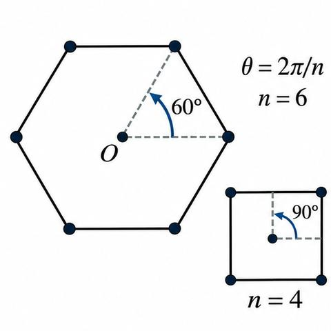
3. The five-fold axis is forbidden
Take a row of lattice points A, B, C, D with translation $\mathbf T$ between neighbours (Fig. 1.6). Let the lattice have an $n$-fold axis through B and another through C. Rotating about B by $\theta$ (clockwise) and about C by $\theta$ (anticlockwise) moves the row to the points $B'$ and $C'$. These must also be lattice points, so $B'C'$ must be a whole multiple of the spacing $BC$:
Since $|\cos\theta|\le1$, the whole number $m$ can be only $3, 2, 1, 0$ or $-1$. These give $\theta = 0^\circ$ (or $360^\circ$), $60^\circ$, $90^\circ$, $120^\circ$ and $180^\circ$. From Eq. (1.3), $n = 1, 6, 4, 3, 2$. A 5-fold axis would need $\theta=72^\circ$, which is not in the list, so it cannot exist. Figure 1.7 shows why: pentagons placed side by side leave gaps, so they cannot fill space as a lattice does.
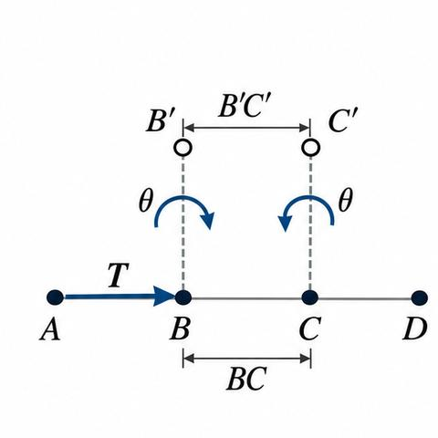
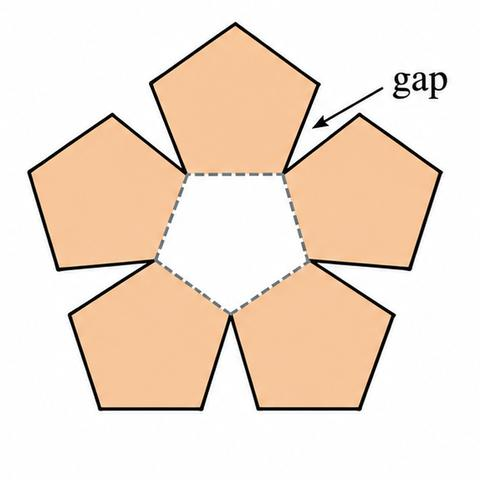
4. Reflections and the point groups
A reflection plane (a line in 2D) splits the lattice into two mirror images. Figure 1.8 shows a notched wheel with such a line.
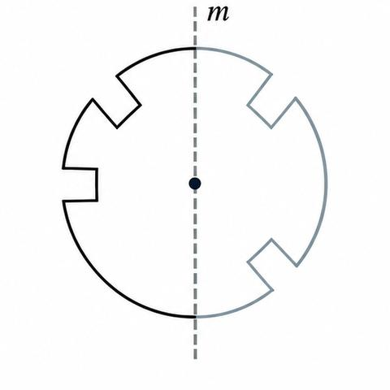
Each allowed rotation axis can be used with or without a mirror. In two dimensions there are five allowed axes, so there are ten combinations. They are written $1$, $1m$, $2$, $2mm$, $3$, $3m$, $4$, $4mm$, $6$, $6mm$. The numeral is the rotation; the first $m$ is a mirror parallel to the axis; the second $m$ is a mirror perpendicular to it (Fig. 1.9, book). These ten are the two-dimensional point groups.
5. Inversion and three dimensions
In three dimensions a centre of inversion $\bar 1$ sends each point $\mathbf r$ to $-\mathbf r$ about a lattice point. Combining it with rotations and reflections gives further operations such as rotation-inversion. In total there are 32 point groups in three dimensions. The book states that these produce only 14 Bravais lattices (Section 1.7).
6. Point groups versus space groups
A point group describes the symmetry around one point. The space group is the set of all symmetry elements of a crystal structure, including the translations. The point symmetry of a crystal is set by its lattice together with its basis, and a unit cell may show point symmetry at more than one place. There are 17 space groups in two dimensions and 230 in three.
This is the consequence of Eqs. (1.3) and (1.4).
Points the book leaves as background
The book says the detailed derivation of all 32 point groups is beyond its scope. The notes do not derive them; the ten two-dimensional groups are enough for the module.
Summary
- Four symmetry operations: translation, rotation, reflection, inversion.
- Rotation axes can only be $1$-, $2$-, $3$-, $4$- or $6$-fold (Eqs. 1.3 and 1.4).
- Ten two-dimensional and 32 three-dimensional point groups; 17 and 230 space groups.
1.7 Types of lattices: Bravais lattices and crystal systems (student notes)
Before you start
- Point groups are the sets of rotations and reflections that fix one point (Section 1.6).
- The lattice parameters are $a$, $b$, $c$ (lengths) and $\alpha$, $\beta$, $\gamma$ (angles between them).
- Counting shared points: a corner is shared, a face point is shared by two cells.
Recall. Share a quantity equally among the things that hold it, then add up the shares.
Re-derive.
- A simple cube has 8 corners. Each corner is shared by 8 cubes of a stacked array.
- The share of one corner for one cube is $1/8$, so $8\times\tfrac18=1$ point per cube.
- A face point is shared by 2 cubes, so each contributes $1/2$. A body-centre point is inside one cube and contributes 1.
Saved. These shares are the weights in Eq. (1.5).
1. Bravais lattices in two dimensions
Point groups limit the lattices that can exist. A lattice is Bravais if its arrangement is consistent with the point group. The ten two-dimensional point groups give five Bravais lattices, grouped into four crystal systems. Table 1.1 (book) lists them:
| S. No. | Crystal system | Characteristic point group symmetry | Bravais lattice | Conventional unit cell | Unit cell characteristics |
|---|---|---|---|---|---|
| 1 | Oblique | 1, 2 | Oblique | Parallelogram | a ≠ b, γ ≠ 90° |
| 2 | Rectangular | 1m, 2mm | 1. Rectangular primitive 2. Rectangular centred | Rectangle | a ≠ b, γ = 90° |
| 3 | Square | 4, 4mm | Square | Square | a = b, γ = 90° |
| 4 | Hexagonal | 3, 3m, 6, 6mm | Hexagonal | 60° Rhombus | a = b, γ = 120° |
The rectangular system has two lattices, a primitive one and a centred one (Fig. 1.10 shows the set).
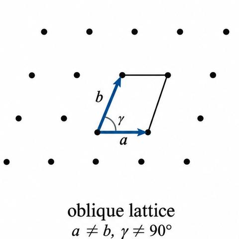
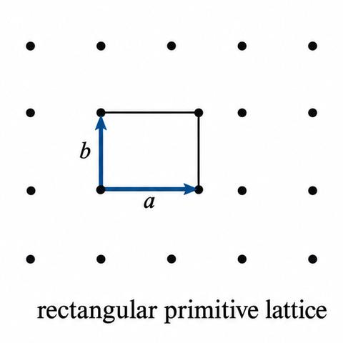
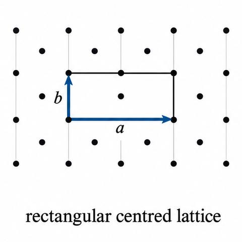
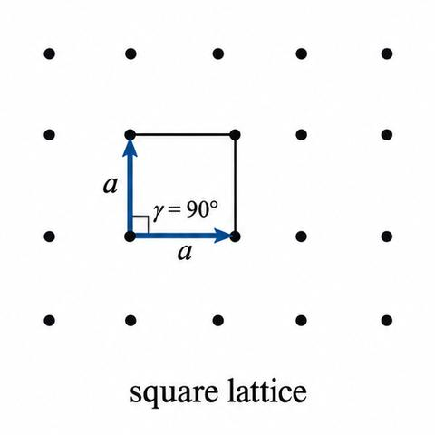
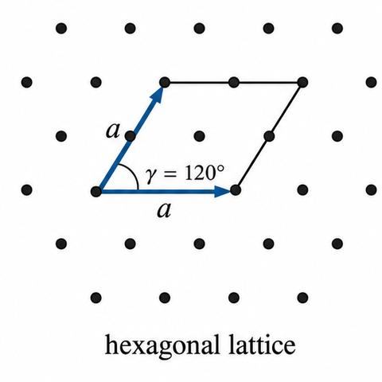
2. Bravais lattices in three dimensions
The 32 three-dimensional point groups produce 14 Bravais lattices in 7 crystal systems. Table 1.2 (book) lists them with lattice parameters, symbols and examples.
| S. No. | Crystal system | Lattice parameters | Bravais lattice | Common abbreviation | Lattice symbol | Examples |
|---|---|---|---|---|---|---|
| 1 | Cubic | a = b = c; α = β = γ = 90° | Simple Body-centred Face-centred | sc bcc fcc | P I F | Cu, Ag, Fe, Na, NaCl, CsCl |
| 2 | Tetragonal | a = b ≠ c; α = β = γ = 90° | Simple Body-centred | st bct | P I | β-Sn, TiO2 |
| 3 | Orthorhombic | a ≠ b ≠ c; α = β = γ = 90° | Simple Body-centred End-centred Face-centred | so bco eco fco | P I C F | Ga, Fe3C (cementite) |
| 4 | Rhombohedral or Trigonal | a = b = c; α = β = γ ≠ 90° | Simple | – | P (or R) | As, Sb, Bi |
| 5 | Hexagonal | a = b ≠ c; α = β = 90°, γ = 120° | Simple | – | P | Mg, Zn, Cd, NiAs |
| 6 | Monoclinic | a ≠ b ≠ c; α = γ = 90° ≠ β | Simple End-centred | – – | P C | CaSO4·2H2O (gypsum) |
| 7 | Triclinic | a ≠ b ≠ c; α ≠ β ≠ γ ≠ 90° | Simple | – | P | K2Cr2O7 |
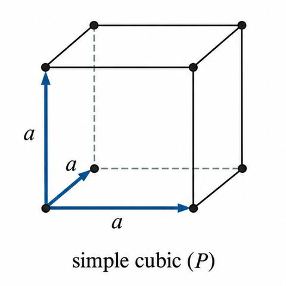
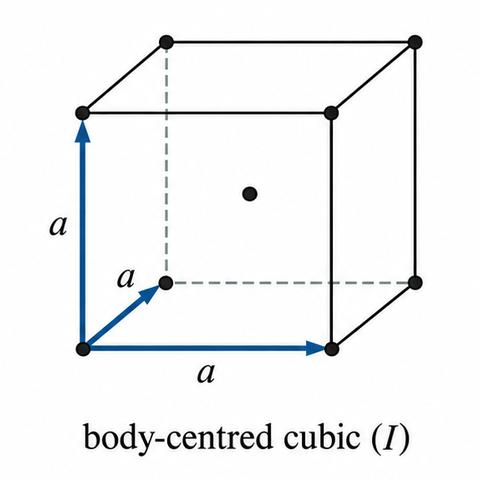
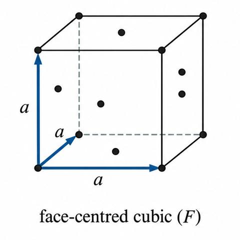
The book gives the hexagonal system one lattice. Its conventional cell can be drawn as a cubical type cell with lattice points only at the corners, or as a hexagonal cell with points at the corners and at the centres of the two hexagonal faces. One hexagonal cell is three cubical type cells joined together.
3. Counting the lattice points in a cell
A point at a corner is shared by eight cells, a point at a face centre by two. The effective number of lattice points $N$ in a cell is
where $N_i$ is the number of points wholly inside the cell, $N_f$ the number at face centres and $N_c$ the number at corners. Applying Eq. (1.5): a simple cubic cell has $N_c=8$ and gives $N=1$; a body-centred cubic cell has $N_c=8$ and $N_i=1$, so $N=2$; a face-centred cubic cell has $N_c=8$ and $N_f=6$, so $N=4$.
4. Why there are only fourteen
Table 1.2 has some gaps. Orthorhombic has four lattices, cubic has three and tetragonal has two. The book shows that the apparent extra lattices are not new. Figure 1.12 places two face-centred tetragonal lattices side by side; the dotted cell they form is a body-centred tetragonal lattice, which is already in the list.
Summary
- Two dimensions: 10 point groups, 5 Bravais lattices, 4 crystal systems.
- Three dimensions: 32 point groups, 14 Bravais lattices, 7 crystal systems (Table 1.2).
- Effective lattice points: $N=N_i+N_f/2+N_c/8$ (Eq. 1.5): sc 1, bcc 2, fcc 4.
1.8–1.9 Lattice directions, planes, Miller indices and interplanar spacing (student notes)
Before you start
- A direction is a line through the origin; a plane is a flat surface of the lattice.
- The dot product $\mathbf u\cdot\mathbf v=uv\cos\theta$ gives the angle between two vectors.
- The equation of a plane with intercepts $p$, $q$, $r$ on the axes is $x/p+y/q+z/r=1$ (Plus Two: 3D geometry, partly recalled).
1. Directions and the family of directions
To name a direction, take any point on it and read its coordinates along the crystal axes. These coordinates are scaled to the smallest whole numbers $[u\,v\,w]$. For a line through the origin, the point gives the indices directly. If the direction is parallel to an axis it has zero index there; a negative projection gives a bar over the index.
Example from Fig. 1.14: the line AB, shifted so that A is at the origin, has projections $-1$, $1$, $0$; its indices are $[\bar1\,1\,0]$. In a cube, the directions $\langle100\rangle$ are the six cube edges, $\langle110\rangle$ the twelve face diagonals and $\langle111\rangle$ the eight body diagonals.
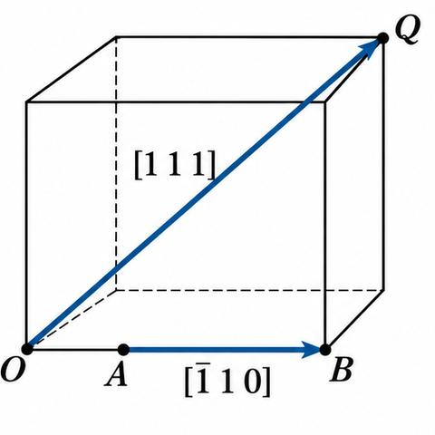
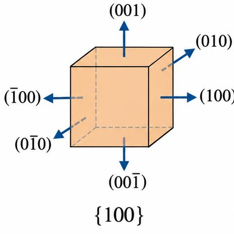
2. Angle between two directions
The angle between directions $[hkl]$ and $[h'k'l']$ follows from the dot product. For a cubic lattice (the book's Eq. 1.6 is written for the general cubic case with equal axes):
Recall. For vectors $\mathbf u$ and $\mathbf v$, $\mathbf u\cdot\mathbf v = |\mathbf u||\mathbf v|\cos\theta$, and in components $\mathbf u\cdot\mathbf v = u_1v_1+u_2v_2+u_3v_3$.
Re-derive.
- Let $\mathbf u=(h,k,l)$ and $\mathbf v=(h',k',l')$ in a cubic lattice where $\mathbf a$, $\mathbf b$, $\mathbf c$ are orthogonal and of equal length.
- Components give $\mathbf u\cdot\mathbf v = hh'+kk'+ll'$.
- Magnitudes give $|\mathbf u|=(h^2+k^2+l^2)^{1/2}$ and $|\mathbf v|=(h'^2+k'^2+l'^2)^{1/2}$.
- Divide: $\cos\theta=\mathbf u\cdot\mathbf v/(|\mathbf u||\mathbf v|)$, which is Eq. (1.6).
Saved. Eq. (1.6).
3. Miller indices of a plane
Miller (a British crystallographer) gave a rule for planes. Take the intercepts of the plane on the three axes, in units of the axis lengths; take their reciprocals; clear fractions; write the three numbers in round brackets. Parallel planes have the same Miller indices. A plane through the origin is shifted to another lattice point before the rule is applied.
The example in the book (Fig. 1.15): plane ABC has intercepts $1$, $2$, $1$. Reciprocals: $1$, $\tfrac12$, $1$. Clearing the fraction: $2$, $1$, $2$. So the plane is $(212)$. The parallel plane DEF, with intercepts $\tfrac12$, $1$, $\tfrac12$, gives the same indices and lies inside the lattice. A family of equivalent planes is written with braces: $\{100\}$ has six members, $\{110\}$ has six and $\{111\}$ has eight (Fig. 1.16).
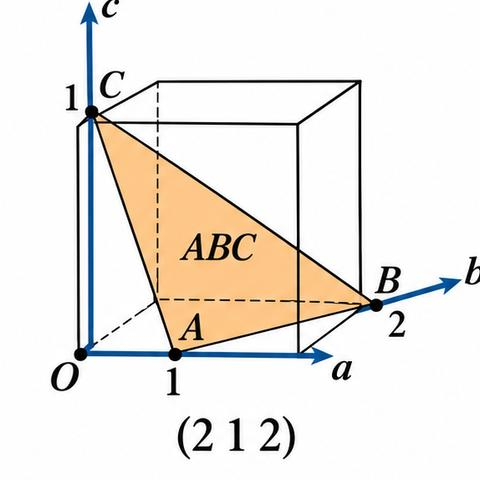
4. Interplanar spacing
Take a set of parallel planes $(hkl)$. The adjacent plane has intercepts $a/h$, $b/k$, $c/l$ on the axes. Let $d$ be the distance between adjacent planes, measured along the normal. Then
Here $\alpha$, $\beta$, $\gamma$ are the angles of the normal with the axes. So the direction cosines of the normal are proportional to $h/a$, $k/b$, $l/c$. If $\hat{\mathbf n}$ is the unit normal, then $a\cos\alpha=\hat{\mathbf n}\cdot\mathbf a$, and so on, and Eq. (1.7) becomes
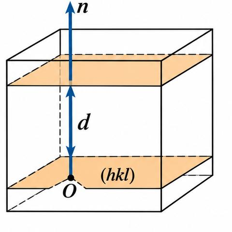
Recall. The plane $px+qy+rz=s$ has normal vector $(p,q,r)$, and the distance from the origin to it is $|s|/\sqrt{p^2+q^2+r^2}$.
Re-derive (orthogonal lattice).
- The plane with intercepts $a/h$, $b/k$, $c/l$ is $\frac{hx}{a}+\frac{ky}{b}+\frac{lz}{c}=1$, so $p=h/a$, $q=k/b$, $r=l/c$, and $s=1$.
- Its normal is therefore along $(h/a,\,k/b,\,l/c)$.
- The distance is $d=1/\sqrt{(h/a)^2+(k/b)^2+(l/c)^2}$.
Saved. Eq. (1.9) below. The plane equation is partly recalled; the normal form is new in this module.
Working this through in an orthogonal lattice, where $\mathbf a$, $\mathbf b$, $\mathbf c$ lie along $x$, $y$, $z$, the plane is $f(x,y,z)=hx/a+ky/b+lz/c=1$. Its normal is $\nabla f$. The book writes the unit normal as $\hat{\mathbf n}=\nabla f/|\nabla f|$, and then uses Eq. (1.8) to get
This is valid for orthogonal lattices only. For a non-orthogonal lattice one finds $\hat{\mathbf n}$ by another method and uses Eq. (1.8). For a cubic lattice $a=b=c$ and
In a cubic lattice the direction $[hkl]$ is perpendicular to the plane $(hkl)$. Worked example 1.3 in the book: a plane with intercepts $1$, $2$ and $0.5$ Å in an orthorhombic crystal with $a:b:c=3:2:1$ has Miller indices $(312)$.
Summary
- Directions: $[uvw]$; families $\langle100\rangle$ (6), $\langle110\rangle$ (12), $\langle111\rangle$ (8).
- Angle between directions: Eq. (1.6).
- Miller indices: reciprocals of intercepts, cleared of fractions.
- Interplanar spacing: Eq. (1.9) for orthogonal lattices; Eq. (1.10) for cubic.
1.10–1.13 Simple crystal structures: close packing, loose packing, diamond, zinc blende and NaCl (student notes)
Before you start
- Coordination number: the number of nearest neighbours of an atom.
- Packing fraction $f$: volume of atoms in a cell divided by the cell volume.
- Volume of a sphere and of a cube (box below).
Recall. A sphere of radius $r$ has volume $\tfrac43\pi r^3$; a cube of side $a$ has volume $a^3$.
Re-derive.
- Take a sphere of radius $r$ packed in a cube of side $a$; each atom takes volume $\tfrac43\pi r^3$.
- If a cell holds $N$ atoms and has volume $V$, the packing fraction is $f=N\cdot\tfrac43\pi r^3/V$.
- For a simple cubic cell with $N=1$, $a=2r$ (the atoms touch along the edge), $f=\tfrac43\pi r^3/(2r)^3=\pi/6\approx0.52$.
Saved. The packing fraction formula, used below for each structure.
1. Close-packed structures
In metals with non-directional metallic bonding, the atoms pack as closely as spheres can. Each atom has twelve equal neighbours: six in its own layer, three in the layer above and three in the layer below. There are two close-packed structures, hcp and fcc, which differ only in how the layers are stacked.
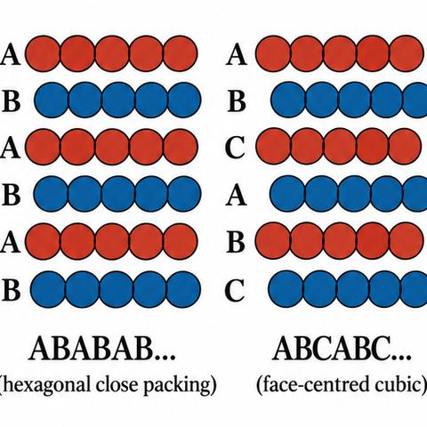
2. Hexagonal close packing (hcp)
Put layer A of atoms in a close-packed sheet. Layer B sits on top, its atoms in the alternate hollows of A. Put the third layer exactly over A. The stacking is $\cdots ABABAB\cdots$. The conventional cell is a hexagonal prism (Fig. 1.19).
Count the atoms: 12 at the corners, each shared by six cells, gives $12\times\tfrac16=2$; 2 at the centres of the basal faces, each shared by two cells, gives $2\times\tfrac12=1$; and 3 inside the prism give 3. Total $2+1+3=6$ atoms per cell.
Two more facts. Within a layer the atoms are a apart; the layers are $c/2$ apart; for an ideal hcp structure $c=1.633\,a$. The space lattice is simple hexagonal with a two-atom basis: one atom at the origin and one at $(\tfrac23,\tfrac13,\tfrac12)$. Its primitive cell has volume one-third of the hexagonal cell and contains two atoms.
Packing fraction. The atoms in the primitive cell are two spheres of radius $r$; the primitive cell has base $a^2\sin60^\circ$ and height $c$. So
With $c=1.633a$ and $a=2r$, the book gives $f=0.74$. So 74 % of an hcp crystal is occupied by atoms. Mg, Zn, Cd and Ti are hcp.
3. Face-centred cubic (fcc)
The first two layers are stacked as in hcp, but the third layer sits in the valleys of A that B does not use. This is layer C. The fourth layer lies over A. The sequence is $\cdots ABCABC\cdots$ (Fig. 1.20). The conventional cell is a cube with atoms at the corners and at the face centres. Its effective number of atoms is $8\times\tfrac18+6\times\tfrac12=4$.
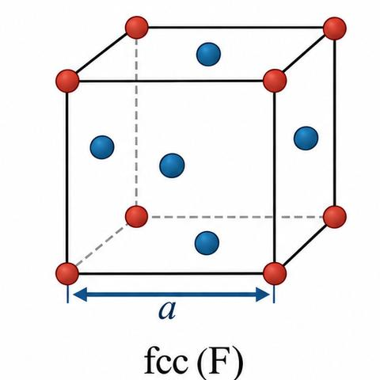
Atoms touch along the face diagonal, so $4r=\sqrt2\,a$. The packing fraction is
This equals the hcp value, as expected for close packing. The coordination number is 12. Cu, Ag, Au and Al are fcc.
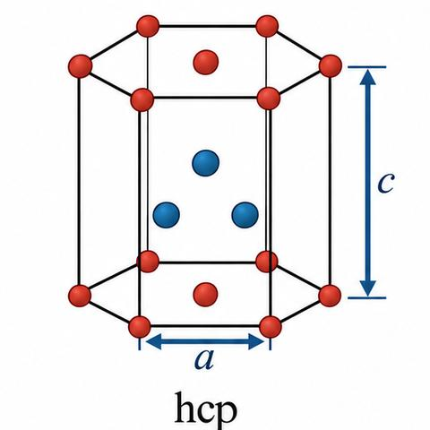
4. Loose-packed structures
A loose-packed structure has fewer than 12 neighbours or $f\lt 0.74$. The two common ones are bcc and sc.
Body-centred cubic (bcc). Atoms sit at the corners and at the body centre. The effective number is $8\times\tfrac18+1=2$. The coordination number is 8. The atoms touch along the body diagonal: $4r=\sqrt3\,a$. The packing fraction is
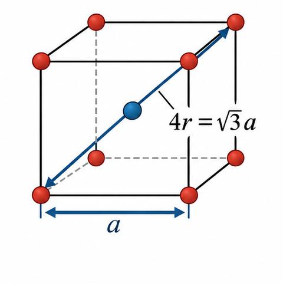
Na, K, Mo and W are bcc.
Simple cubic (sc). Atoms sit only at the corners, touching along the edges: $a=2r$. The coordination number is 6, and $f=\pi/6\approx0.52$ (worked in the recall box). Only polonium is sc at room temperature.
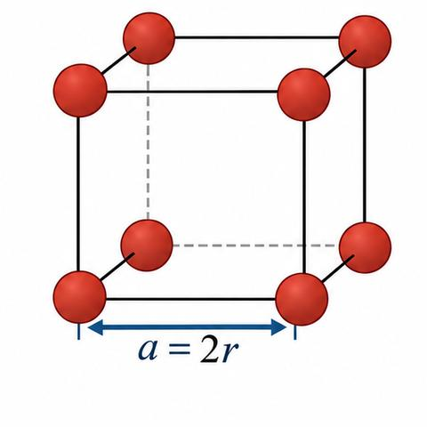
5. Diamond cubic structure
The space lattice is fcc. The basis is two carbon atoms: one at a lattice point and one a quarter of the way along the body diagonal (Fig. 1.23). The second atom sits in an alternate tetrahedral hole of the fcc arrangement. This opens the structure, and the packing efficiency falls to 34 %. Each carbon has four neighbours at distance $\sqrt3\,a/4$. The structure can also be seen as two interpenetrating fcc lattices, one at $(0,0,0)$ and one at $(\tfrac14,\tfrac14,\tfrac14)$ (Fig. 1.24). Si, Ge, SiC, GaAs and grey tin have this structure.
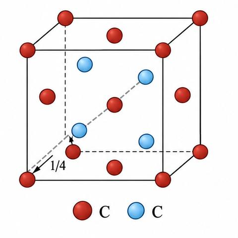
6. Zinc blende (ZnS)
The zinc blende structure is the diamond cubic structure with the two fcc lattices occupied by different elements. The dark atoms are Zn and the light atoms are S (Section 1.12).
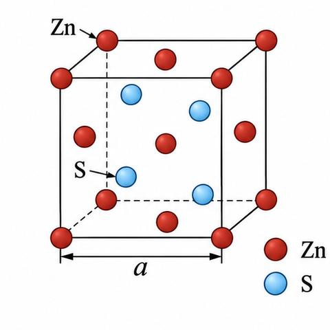
7. Sodium chloride (NaCl)
Each Na+ is octahedrally surrounded by six Cl−, and the reverse. The unit cell is fcc: the four Cl− ions occupy the fcc positions and the four Na+ ions occupy the octahedral voids. The structure is an fcc lattice with a two-ion basis, Na+ at $(0,0,0)$ and Cl− at $(a/2,0,0)$. The ion positions in the cubic cell are
There are four molecules per cell. The ions touch along the cube edge, so $a=2(r_{+}+r_{-})$.
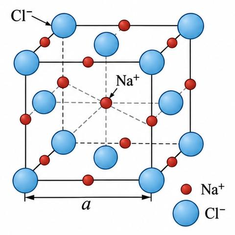
8. Worked example 1.5: NaCl packing and density
Data: $r_{\text{Na}^+}=0.98$ Å, $r_{\text{Cl}^-}=1.81$ Å, atomic masses 22.99 and 35.45 amu. Then $a=2(0.98+1.81)=5.58$ Å. Four Na+ and four Cl− ions per cell give
and the density is
Example 1.1 in the book gives the radius relations for the three cubic structures: sc $a=2r$; bcc $a=4r/\sqrt3$; fcc $a=2\sqrt2\,r$.
Summary
- Close packing (hcp, fcc): coordination 12, $f=0.74$. Stacking ABAB (hcp) or ABC (fcc).
- bcc: coordination 8, $f=\pi\sqrt3/8\approx0.68$. sc: coordination 6, $f=\pi/6\approx0.52$.
- Diamond and zinc blende: fcc with a two-atom basis, coordination 4, $f=0.34$.
- NaCl: fcc with a Na+–Cl− basis; four molecules per cell.
2.1–2.2 X-ray diffraction: Bragg's law and the Laue equations (student notes)
Before you start
- Wave interference: two waves add constructively when their path difference is a whole number of wavelengths (box below).
- Scalar and vector products: $\mathbf u\cdot\mathbf v=uv\cos\theta$.
- Interplanar spacing $d$ and the Miller indices of a plane (Section 1.9).
Recall. Two waves of wavelength $\lambda$ reinforce when their path difference is $n\lambda$, with $n$ a whole number.
Re-derive (for reflection from two planes).
- Two parallel planes a distance $d$ apart reflect a beam at glancing angle $\theta$.
- Ray 2 travels down to the lower plane and back up. Each leg of the extra path has length $d\sin\theta$ (the perpendicular drops of Fig. 2.2).
- Total extra path: $2d\sin\theta$.
- Reinforcement needs $2d\sin\theta=n\lambda$.
Saved. Eq. (2.1), Bragg's law.
1. Why crystals diffract X-rays
X-rays have wavelengths of about an angstrom, the same order as the spacing of atoms in a crystal. A single crystal acts as a three-dimensional grating for them. Each atomic electron, struck by the beam, oscillates at the frequency of the beam and re-radiates. The re-radiated waves interfere. In most directions they cancel; in some directions they add. Those directions are the diffraction maxima (Fig. 2.1). The book notes that the Laue pattern of a single crystal reflects its symmetry, and that X-ray diffraction is used to find crystal structures and the wavelength of X-rays.
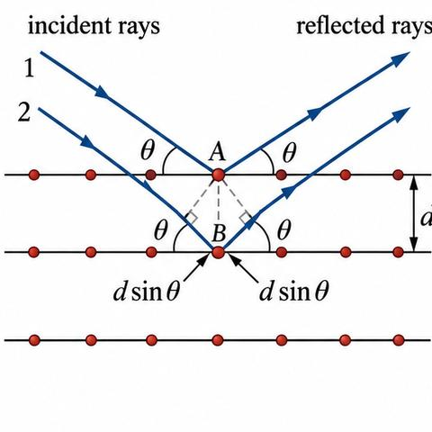
2. Bragg's treatment and Bragg's law
W. H. Bragg and W. L. Bragg treated a crystal as a set of parallel atomic planes. A beam reflects from each plane at glancing angle $\theta$, and the reflected rays interfere. So reflection from the planes replaces diffraction from the atoms. Take planes with spacing $d$. Rays 1 and 2 strike adjacent planes. The path difference is $2d\sin\theta$. Reinforcement requires
This is Bragg's law, and $n$ is the order of reflection. For $n=0$ the reflection is in the direction of the beam and cannot be seen. Higher orders appear at larger $\theta$ and are weaker. The highest order is limited by $\sin\theta\le1$, which requires $\lambda\le2d$. Since $d\approx10^{-10}$ m, the useful wavelength is below about 1 Å.
3. Laue's treatment
Von Laue started from single scatterers. Take two identical scattering centres A and B separated by $\mathbf r$ (Fig. 2.3). Let $\hat{\mathbf n}_1$ be the unit vector of the incident beam and $\hat{\mathbf n}_2$ that of the scattered beam, with the angle $2\theta$ between them. The path difference between the two scattered rays is
where $\mathbf N=\hat{\mathbf n}_1-\hat{\mathbf n}_2$. Fig. 2.4 shows that $\mathbf N$ is normal to the reflecting plane and that $|\mathbf N|=2\sin\theta$.
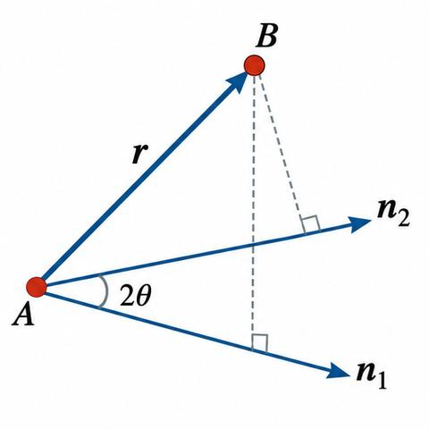
The phase difference between the two rays is therefore
The rays add constructively if $\phi$ is a multiple of $2\pi$. In a crystal, $\mathbf r$ can be any of the axis vectors $\mathbf a$, $\mathbf b$, $\mathbf c$, and all three must hold together. With integers $h$, $k$, $l$ (and a common factor $n$):
The integers $h'$, $k'$, $l'$ have a common factor $n$ with the smallest set $h$, $k$, $l$, which are the Miller indices of the reflecting plane.
Write $\alpha$, $\beta$, $\gamma$ for the angles between $\mathbf N$ and the axes. Then $\mathbf a\cdot\mathbf N=aN\cos\alpha=2a\sin\theta\cos\alpha$, and so on. Eqs. (2.3) become the Laue equations:
In an orthogonal system the direction cosines of $\mathbf N$ also satisfy
Equations (2.4) and (2.5) fix $\theta$ and the direction $\mathbf N$ for a given set $(hkl)$ and order $n$. The direction cosines of $\mathbf N$ are proportional to $h/a$, $k/b$, $l/c$. These are also the direction cosines of the normal to the plane $(hkl)$ (Eq. 1.7). So $\mathbf N$ is the normal to $(hkl)$, and the plane $(hkl)$ is the reflecting plane.
Combine this with Eq. (1.7), $d=(a/h)\cos\alpha$ and so on. Equations (2.4) then give $2d\sin\theta=n\lambda$, which is Bragg's law (Eq. 2.1). The Laue treatment therefore includes the Bragg treatment. The book notes that the $n$th order from $(hkl)$ overlaps the first order from $(nh\,nk\,nl)$, so in structure work one takes $n=1$ and includes all planes, real or imaginary, with the indices of the common factor.
Bragg's law, Eq. (2.1), and the Laue equations, Eq. (2.4), describe the same condition. Eq. (2.2) gives the phase of the scattered wave.
Summary
- Bragg: $2d\sin\theta=n\lambda$ (Eq. 2.1); reflection from parallel planes.
- Laue: path difference $\mathbf r\cdot\mathbf N$, phase $(2\pi/\lambda)\mathbf r\cdot\mathbf N$ (Eq. 2.2); three conditions (Eq. 2.3) reduce to Eq. (2.4).
- $\lambda$ must be less than $2d$; X-rays of about 1 Å are used.
2.4–2.6 Reciprocal lattice, its vectors, its properties, and Bragg's law in reciprocal space (student notes)
Before you start
- Normals to planes and interplanar spacing $d_{hkl}$ (Section 1.9).
- Cross product: $\mathbf b\times\mathbf c$ is perpendicular to $\mathbf b$ and $\mathbf c$, with magnitude equal to the area they span.
- Dot product and the Bragg condition (Section 2.2).
Recall. Two non-zero vectors are perpendicular when their dot product is zero. A dot product of a vector with itself is the square of its length.
Re-derive.
- Suppose $\mathbf a^*=\mathbf b\times\mathbf c/V$. Then $\mathbf a^*\cdot\mathbf b=\mathbf a^*\cdot\mathbf c=0$, because a cross product is perpendicular to both of its factors.
- $\mathbf a^*\cdot\mathbf a=\mathbf a\cdot(\mathbf b\times\mathbf c)/V=V/V=1$ (the scalar triple product equals $V$).
- So each reciprocal vector is perpendicular to the other two direct vectors and has unit product with its own direct vector.
Saved. Eqs. (2.15) and (2.16).
1. Why a reciprocal lattice
Each set of parallel planes of a crystal is a family with its own normal and spacing. The planes are hard to picture, so Ewald introduced a lattice of points, one for each set. Draw the normal to each set of planes, with length equal to $1/d$. The tips of these normals form the reciprocal lattice. Each point stands for one set of planes: its direction gives the orientation of the planes, and its distance from the origin gives $1/d$.
To build it: (a) take an origin; (b) draw a normal to each set of planes; (c) make each normal of length $1/d$ of its set; (d) the tips are the reciprocal lattice points. Example (Fig. 2.9): for the monoclinic cell, the normal to $(100)$ has length $1/d_{100}$, and the normal to $(200)$ has twice that length, so the point $(200)$ is twice as far from the origin as $(100)$.
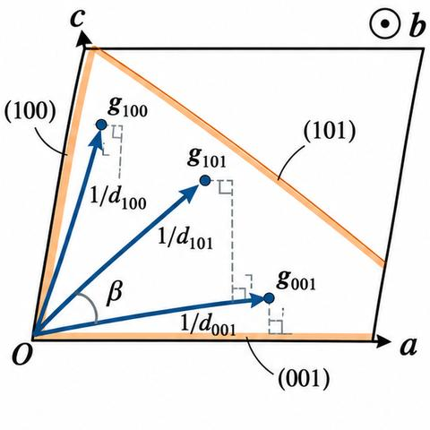
2. Reciprocal lattice vectors
A reciprocal lattice vector $\mathbf a_{hkl}$ has length $1/d_{hkl}$ and points along the normal $\hat{\mathbf n}$ of the planes:
The three shortest vectors along the cube normals are the primitive reciprocal vectors. The volume of the direct cell is $V=\mathbf a\cdot(\mathbf b\times\mathbf c)$. Working from the plane $(100)$ with base $\mathbf b\times\mathbf c$ and height $d_{100}$, the book obtains $\mathbf a_{100}=(\mathbf b\times\mathbf c)/V$ (Eq. 2.11), and $\mathbf a_{100}=\hat{\mathbf n}/d_{100}$ (Eq. 2.12). Repeating for the other two faces gives the reciprocal basis:
Each reciprocal vector is normal to two of the direct vectors (Eq. 2.14), and their scalar products give
Eq. (2.16) fixes only the component of $\mathbf a^*$ along $\mathbf a$. In a monoclinic crystal $\mathbf a^*$ and $\mathbf a$ point in different directions, so the length of $\mathbf a^*$ is $1/(a\cos\theta)$, where $\theta$ is the angle between them.
Many texts use a $2\pi$ convention, in which $\mathbf a^*\cdot\mathbf a=\mathbf b^*\cdot\mathbf b=\mathbf c^*\cdot\mathbf c=2\pi$:
Direct vectors have dimensions of length and reciprocal vectors of length$^{-1}$, which is why the second lattice is called reciprocal. The reciprocal cell volume is inversely proportional to the direct cell volume. The crystal lattice lives in ordinary (real) space; the reciprocal lattice lives in $k$-space, the Fourier space of the wave vector $\mathbf k$.
3. The two lattices and their points
Direct lattice points are $\mathbf T=m\mathbf a+n\mathbf b+p\mathbf c$ (Eq. 2.19). Reciprocal lattice vectors are
Take the dot product of $\mathbf G$ and $\mathbf T$, using Eq. (2.17), $\mathbf a^*\cdot\mathbf a=2\pi$:
so $\exp(i\mathbf G\cdot\mathbf T)=1$. The point $(h,k,l)$ in reciprocal space therefore corresponds to the set of planes $(hkl)$.
4. Reciprocal lattices of the cubic lattices
Simple cubic. With $\mathbf a=a\hat{\mathbf i}$, $\mathbf b=a\hat{\mathbf j}$, $\mathbf c=a\hat{\mathbf k}$ and $V=a^3$, Eq. (2.18) gives
The reciprocal of a simple cubic lattice is simple cubic, with edge $2\pi/a$. Simple cubic is self-reciprocal.
Body-centred cubic. The primitive vectors are (Fig. 2.10)
The volume is $V=a^3/2$. Eq. (2.18) gives the reciprocal vectors
These are the primitive vectors of an fcc lattice. So the reciprocal of bcc is fcc.
Face-centred cubic. The primitive vectors are
with $V=a^3/4$. The reciprocal vectors are
These are the bcc primitive vectors with edge $4\pi/a$. The reciprocal of fcc is bcc.
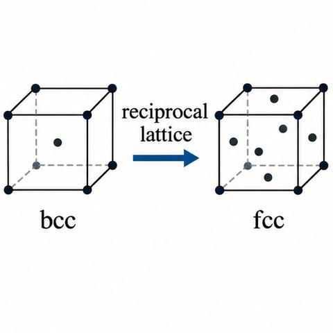
5. Properties of the reciprocal lattice (Section 2.5)
- Each reciprocal point corresponds to one set of parallel planes of the direct lattice.
- Its distance from the origin is inversely proportional to the interplanar spacing of that set.
- The reciprocal cell volume is inversely proportional to the direct cell volume.
- The reciprocal cell need not be a parallelepiped; the Wigner–Seitz cell of the reciprocal lattice is the Brillouin zone.
- The direct lattice is the reciprocal of its own reciprocal. Simple cubic is self-reciprocal; bcc and fcc are reciprocal to each other.
6. Bragg's law in the reciprocal lattice (Section 2.6)
Draw the incident beam as a vector $\mathrm{AO}$ of length $1/\lambda$ ending at the origin $O$ of the reciprocal lattice. Draw a sphere (the Ewald sphere) with centre $A$ and radius $AO$. It meets some reciprocal lattice point $B$ if the Bragg condition holds. The vector $OB$ is a reciprocal vector normal to the planes $(hkl)$, so its length is $n/d_{hkl}$:
From the triangle $AOB$, $OB=2\,OA\sin\theta=2\sin\theta/\lambda$:
Equating (2.26) and (2.27): $2d_{hkl}\sin\theta=n\lambda$, which is Bragg's law. A point $(nh,nk,nl)$ with common factor $n$ is the $n$th order reflection of $(hkl)$. The condition holds for a given $\lambda$ if the sphere of radius $1/\lambda$ about $A$ passes through a reciprocal lattice point (the Ewald construction, Fig. 2.12).
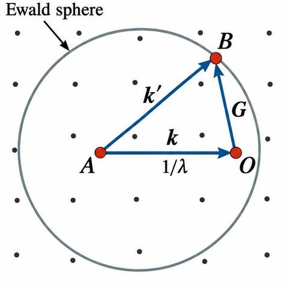
Magnify all vectors by $2\pi$. The incident wave vector is $\mathbf k=\mathbf{A'O'}$, the reciprocal vector is $\mathbf G=\mathbf{O'B'}$, and $\mathbf{A'B'}=\mathbf k+\mathbf G$. For diffraction $B'$ lies on the sphere, $|\mathbf k+\mathbf G|=|\mathbf k|$, which gives
This is the vector form of Bragg's law. The scattered wave vector is $\mathbf k'=\mathbf k+\mathbf G$, so
Scattering changes the direction of the wave vector, not its magnitude, and the change is a reciprocal lattice vector $\mathbf G$. Eq. (2.30) is the last form of the same statement.
This is the condition used to construct the Brillouin zones in Section 2.7.
Summary
- Reciprocal vectors: $\mathbf a^*=\mathbf b\times\mathbf c/V$ and cyclic (Eq. 2.13); $\mathbf a^*\cdot\mathbf a=2\pi$ in the $2\pi$ convention (Eq. 2.18).
- Reciprocal of sc is sc; of bcc is fcc; of fcc is bcc (Eqs. 2.21, 2.23, 2.25).
- Bragg in reciprocal space: $2\mathbf k\cdot\mathbf G+G^2=0$ (Eq. 2.28).
2.7 Brillouin zones (student notes)
Before you start
- Bragg's law in vector form, $2\mathbf k\cdot\mathbf G+G^2=0$ (Eq. 2.28).
- Reciprocal lattice vectors of the simple cubic, bcc and fcc lattices (Eqs. 2.21, 2.23, 2.25).
- Perpendicular bisector of a line segment: the set of points equidistant from its two ends.
Recall. The perpendicular bisector of the segment from $\mathbf 0$ to $\mathbf G$ is the set of points $\mathbf k$ with $\mathbf k\cdot\mathbf G=G^2/2$.
Re-derive.
- A point $\mathbf k$ is equidistant from $\mathbf 0$ and $\mathbf G$ when $|\mathbf k|^2=|\mathbf k-\mathbf G|^2$.
- Expanding: $k^2=k^2-2\mathbf k\cdot\mathbf G+G^2$, so $2\mathbf k\cdot\mathbf G=G^2$.
- Thus $\mathbf k\cdot\mathbf G=G^2/2$, the bisector plane (or line in 2D).
Saved. The bisector form is the same as Eq. (2.28) with $\mathbf k$ on the boundary.
1. What a Brillouin zone is
Ewald's construction shows that the $\mathbf k$ values reflected by the crystal are those whose tips lie on the Bragg condition. A Brillouin zone is the locus of all such $\mathbf k$ values, which bound the regions of reciprocal space that are separated by the reflecting planes.
2. Square lattice in two dimensions
Take a square lattice of side $a$, with $\mathbf a=a\hat{\mathbf i}$, $\mathbf b=a\hat{\mathbf j}$. The reciprocal vectors are $\mathbf a^*=(2\pi/a)\hat{\mathbf i}$ and $\mathbf b^*=(2\pi/a)\hat{\mathbf j}$. A reciprocal lattice vector is $\mathbf G=(2\pi/a)(h\hat{\mathbf i}+k\hat{\mathbf j})$, with $k_x$ and $k_y$ the components of $\mathbf k$. Substituting in Eq. (2.28), $2\mathbf k\cdot\mathbf G+G^2=0$, gives
Each pair $(h,k)$ gives a line in the $(k_x,k_y)$ plane. For $h=\pm1$, $k=0$ the condition gives $k_x=\pm\pi/a$ with $k_y$ free. For $h=0$, $k=\pm1$ it gives $k_y=\pm\pi/a$ with $k_x$ free. The four lines form a square of side $2\pi/a$, which is the first Brillouin zone (Fig. 2.14).
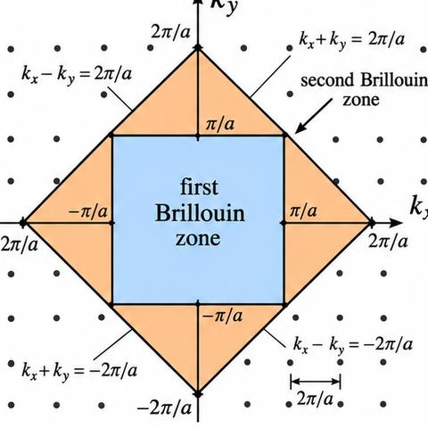
For $h=\pm1$, $k=\pm1$, Eq. (2.31) gives four further lines $\pm k_x\pm k_y=2\pi/a$. The region between these and the first square is the second Brillouin zone. The first zone boundaries are the reflecting planes of first order; the second zone's are the reflecting planes of second order. A $\mathbf k$ that does not end on a zone boundary cannot be Bragg reflected.
3. Cubic lattices in three dimensions
For a cubic lattice of edge $a$ the same condition is
The first zone is a cube of side $2\pi/a$. The second zone adds pyramids on each cube face, as triangles are added to the square in two dimensions.
There is a shorter method. The reciprocal vector $\mathbf G$ of Eq. (2.28) is the normal bisector of the zone boundary, and all $\mathbf k$ on that boundary share the same $\mathbf G$. So the first Brillouin zone is the region bounded by the normal bisectors of the shortest non-zero $\mathbf G$ vectors. The second zone uses the next longer $\mathbf G$ vectors, and so on.
4. First Brillouin zone of bcc
The reciprocal vector for bcc is
The shortest non-zero $\mathbf G$ vectors are the twelve vectors $(2\pi/a)(\pm\hat{\mathbf i}\pm\hat{\mathbf j})$, $(2\pi/a)(\pm\hat{\mathbf j}\pm\hat{\mathbf k})$ and $(2\pi/a)(\pm\hat{\mathbf k}\pm\hat{\mathbf i})$. Their normal bisector planes bound a twelve-faced solid, the rhombic dodecahedron (Fig. 2.15).
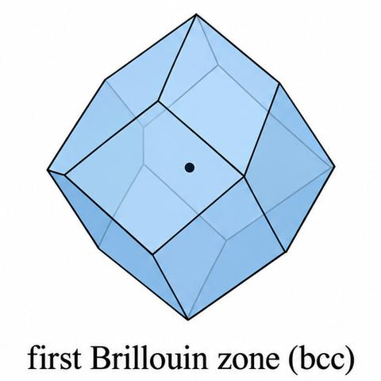
5. First Brillouin zone of fcc
For fcc the reciprocal vector is
The eight shortest vectors are $(2\pi/a)(\pm\hat{\mathbf i}\pm\hat{\mathbf j}\pm\hat{\mathbf k})$. Their bisectors form an octahedron. Its corners are cut off by the bisectors of the six vectors $(2\pi/a)(\pm2\hat{\mathbf i})$, $(2\pi/a)(\pm2\hat{\mathbf j})$, $(2\pi/a)(\pm2\hat{\mathbf k})$. The result is a truncated octahedron (Fig. 2.16). This is also a primitive cell of the bcc lattice.
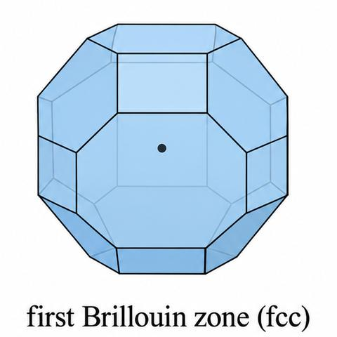
Square lattice: square of side $2\pi/a$. Simple cubic: cube of side $2\pi/a$. bcc: rhombic dodecahedron. fcc: truncated octahedron.
Summary
- Brillouin zones are bounded by the normal bisectors of the reciprocal vectors $\mathbf G$ (Eq. 2.28).
- 2D square: Eq. (2.31); 3D cubic: Eq. (2.32).
- bcc zone: Eq. (2.33) and the twelve shortest $\mathbf G$; fcc zone: Eq. (2.34) and the eight shortest $\mathbf G$ plus six more.